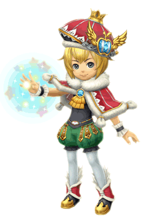
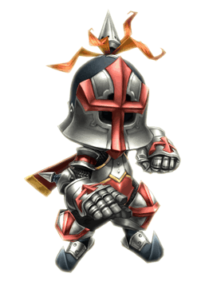
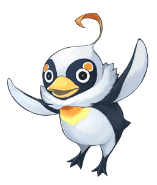

8 |
Charaktere |
 |
● Leo
Volk: Clavat Ein junger König, der erst seine Mutter verlor, als er noch klein war, und kurz danach sein Königreich. Erwählt vom Kristall, der ihm die Aufgabe überträgt, sein Königreich neu zu errichten. Diese Aufgabe wird ihm durch die Kraft „Architek“ erleichtert - eine magische Kraft, die es vermag, Erinnerungen feste Form zu verleihen. |
|
 ● Chime ● ChimeVolk: Halb-Clavat, Halb-Selkie Die Lehrmeisterin Leos, ebenso Ratgeberin und beste Freundin. Sie ist die Kanzlerin des Reiches und erscheint stets an Leos Seite, wann immer er seine Glocke erschallen lässt, um ihm bei seinen Aufgaben zu helfen. Alle Verwaltungsbelange, ob es nun darum geht, neue Gebäude zu errichten, das Wohlergehen der Bürger zu sichern, oder gar die Bettgehzeit des König einzuhalten, nimmt sie in die Hand! |
|
● Hugh Yurg
Volk: Lilty Ein tapferer Held, der einst die Kristallkarawane in Leos Königreich anführte. Zahllose Schlachten liegen hinter ihm. Ein großartiger Ratgeber in allen Belangen, die den Kampf oder das leibliche Wohl angehen. Er dient dem jungen König mit unerschütterlicher Loyalität. |
|
● Pavlov
Volk: Unbekannt Diese unflätige Kreatur erscheint eines Tages, als der König und sein Gefolge ein neues Reich betreten. Obwohl er ganz den Anschein eines bloßen Maulhelden macht, besteht doch die Möglichkeit, dass er weit mehr über die Vorgänge im Lande weiß, als er verlauten lässt... |
 |
 |
 |